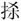
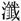

春秋公羊传卷七
庄公二
庄公八年
八年春，王正月，师次于郎，以俟陈人、蔡人。次不言俟，此其言俟何？托不得已也。甲午，祠兵。祠兵者何？出曰祠兵，入曰振旅，其礼一也，皆习战也。何言乎祠兵？为久也。曷为为久？吾将以甲午之日，然后祠兵于是。
夏，师及齐师围成，成降于齐师。成者何？盛也。盛则曷为谓之成？讳灭同姓也。曷为不言降吾师？辟之也。
秋，师还。还者何？善辞也。此灭同姓何善尔？病之也。曰：“师病矣”。曷为病之，非师之罪也。
冬十有一月癸未，齐无知弑其君诸儿。
庄公九年
九年春，齐人杀无知。
公及齐大夫盟于暨。公曷为与大夫盟？齐无君也。然则何以不名？其讳与大夫盟也，使若众然。
夏，公伐齐纳纠。纳者何？入辞也。其言伐之何？伐而言纳者，犹不能纳也。纠者何？公子纠也。何以不称公子？君前臣名也。齐小白入于齐。曷为以国氏？当国也。其言入何？篡辞也。
秋，七月丁酉，葬齐襄公。
八月庚申，及齐师战于乾时，我师败绩。内不言败，此其言败何？伐败也。曷为伐败？复仇也。此复仇乎大国，曷为使微者？公也。公则曷为不言公？不与公复仇也。曷为不与公复仇？复仇者在下也。
九月，齐人取子纠，杀之。其取之何？内辞也，胁我使我杀之也。其称子纠何？贵也。其贵奈何？宜为君者也。
冬，浚洙。洙者何？水也。浚之者何？深之也。曷为深之？畏齐也。曷为畏齐也？辞杀子纠也。
庄公十年
春，王正月，公败齐师于长勺。
二月，公侵宋，曷为或言侵，或言伐？觕者曰侵，精者曰伐。战不言伐，围不言战，入不言围，灭不言入，书其重者也。
三月，宋人迁宿。迁之者何？不通也，以地还之也。子沈子曰：“不通者，盖因而臣之也。”
夏六月，齐师、宋师次于郎。公败宋师乘丘。其言次于郎何？伐也。伐则其言次何？齐与伐而不与战，故言伐也。我能败之，故言次也。
秋九月，荆败蔡师于莘，以蔡侯献舞归。荆者何？州名也。州不若国，国不若氏，氏不若人，人不若名，名不若字，字不若子。蔡侯献舞何以名？绝。曷为绝之？获也。曷为不言其获？不与夷狄之获中国也。
冬十月，齐师灭谭，谭子奔莒。何以不言出？国已灭矣，无所出也。
庄公十一年
十有一年，春，王正月。
夏五月戊寅，公败宋师于鄑。
秋，宋大水。何以书，记灾也。外灾不书，此何以书？及我也。
冬，王姬归于齐。何以书？过我也。
庄公十二年
十有二年，春王，三月，纪叔姬归于酅。其言归于酅何？隐之也。何隐尔？其国亡矣，徒归于叔尔也。
夏四月。
秋八月甲午，宋万弑其君接，及其大夫仇牧。及者何？累也。弑君多矣，舍此无累者乎？孔父荀息皆累也。舍孔父荀息无累者乎？曰：“有。”有则此何以书？贤也。何贤乎仇牧？仇牧可谓不畏强御矣。其不畏强御奈何？万尝与庄公战，获乎庄公。庄公归，散舍诸宫中，数月然后归之。归反为大夫于宋。与闵公博，妇人皆在侧。万曰：“甚矣，鲁侯之淑，鲁侯之美也！天下诸侯宜为君者，唯鲁侯尔！”闵公矜此妇人，妒其言，顾曰：“此虏也！尔虏焉故，鲁侯之美恶乎至？”万怒，搏闵公，绝其脰。仇牧闻君弑，趋而至，遇之于门，手剑而叱之。万臂仇牧，碎其首，齿著乎门阖。仇牧可谓不畏强御矣。
冬十月，宋万出奔陈。
庄公十三年
七年春，齐侯、宋人、陈人、蔡人、邾娄人会于北杏。
夏六月，齐人灭遂。
秋七月。
冬，公会齐侯，盟于柯。何以不日？易也。其易奈何？桓之盟不日，其会不致，信之也。其不日何以始乎此？庄公将会乎桓，曹子进曰：“君之意何如？”庄公曰：“寡人之生则不若死矣。”曹子曰“然则君请当其君，臣请当其臣。”庄公曰：“诺。”于是会乎桓。庄公升坛，曹子手剑而从之。管子进曰：“君何求乎？”曹子曰：“城坏压竟，君不图与？”管子曰：“然则君将何求？”曹子曰：“愿请汶阳之田。”管子顾曰：“君许诺。”桓公曰：“诺。”曹子请盟，桓公下与之盟。已盟，曹子摽剑而去之。要盟可犯，而桓公不欺。曹子可仇，而桓公不怨，桓公之信著乎天下，自柯之盟始焉。
庄公十四年
春，齐人、陈人、曹人伐宋。
夏，单伯会伐宋。其言会伐宋何？后会也。
秋七月荆入蔡。
冬，单伯会齐侯、宋公、卫侯、郑伯于鄄。
庄公十五年
春，齐侯、宋公、陈侯、卫侯、郑伯会于鄄。
夏，夫人姜氏如齐。
秋，宋人，齐人、邾娄人伐儿。
郑人侵宋。
冬十月。
庄公十六年
八年春，王正月。
夏，宋人、齐人、卫人伐郑。
秋，荆伐郑。
冬十有二月，公会齐侯、宋公、陈侯、卫侯、郑伯、许男、曹伯、滑伯、滕子同盟于幽。同盟者何？同欲也。
邾娄子克卒。
庄公十七年
春，齐人执郑瞻。郑瞻者何？郑之微者也。此郑之微者，何言乎齐人执之？书甚佞也。
夏，齐人于遂。者何？积也，众杀戍者也。
秋，郑瞻自齐逃来。何以书？书甚佞也。曰：“佞人来矣，佞人来矣。”
冬，多麋。何以书，记异也。